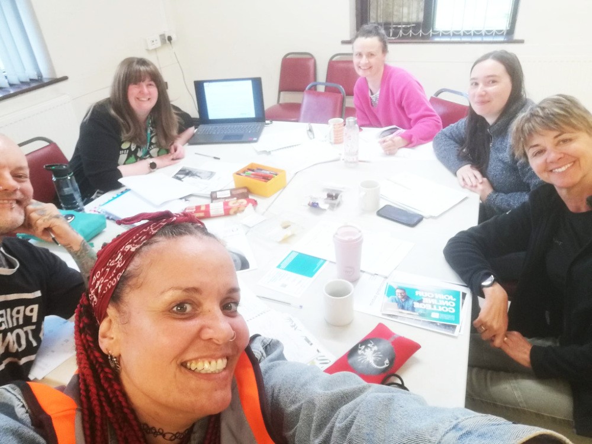
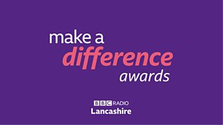
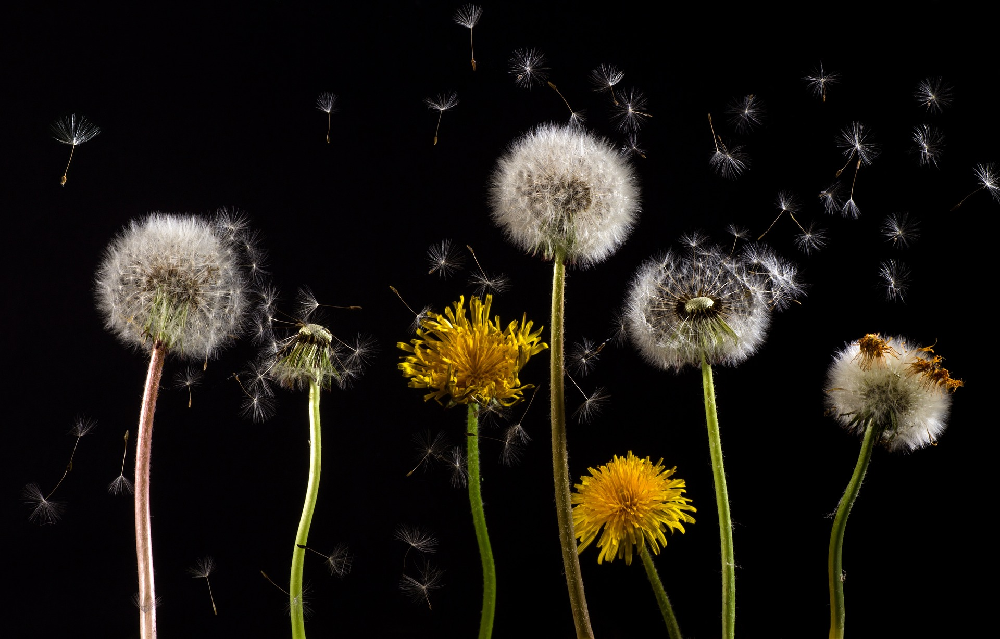

Alderfield Allotment
Alderfield, Penwortham · PR1 9HA
We are a community in Penwortham & South Ribble using nature to heal, connect and create lasting friendships — one garden, one litter pick, one seed at a time.

What we do
From regenerating allotments to leading litter picks, every activity helps our people, our wildlife and our community grow. Here is a taste of what happens when we get our hands dirty.
We plant and harvest produce, raise seedlings, share plants and teach the community where food comes from.
We bring disused land back to life — woodland, gardens and wildflower areas that support local wildlife.
Gardening is our therapy. We build confidence, purpose and connection in a calm, judgement-free setting.
Workshops, forest school and a volunteer pathway with real skills and accredited courses when you are ready.
Friendly, relaxed and inclusive — most of our best friendships started out here.
Our projects
Alderfield, Penwortham · PR1 9HA

Alderfield, Penwortham

Across Penwortham & South Ribble

Last Thursday of each month · 4:30pm

Kingsfold, Penwortham

Green Croft Valley, Penwortham
In their words
My mental health and well-being have improved massively by being part of Guardians of Nature. I have found purpose, I have found friendship, and I have found nature.
Volunteering here has helped me meet new people, gain confidence and learn new skills with plants. Most of my best friends are people I have met through volunteering.
Of every organisation I have volunteered with, this is the only one that offers all five ways to well-being — and a sixth: purpose.
We are also proud to be Valuing Volunteers certified and a Selnet Awards 2026 finalist. Thank you to our incredible volunteers and the community of South Ribble.

With thanks to

Whether you garden, build, plant, pick litter or just want company in nature — you belong.